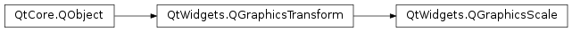

QGraphicsScale¶
Note
This class was introduced in Qt 4.6.
Synopsis¶
Functions¶
Signals¶
- def
originChanged() - def
scaleChanged() - def
xScaleChanged() - def
yScaleChanged() - def
zScaleChanged()
Detailed Description¶
The
PySide2.QtWidgets.QGraphicsScaleclass provides a scale transformation.
PySide2.QtWidgets.QGraphicsSceneprovides certain parameters to help control how the scale should be applied.The origin is the point that the item is scaled from (i.e., it stays fixed relative to the parent as the rest of the item grows). By default the origin is
PySide2.QtCore.QPointF(0, 0).The parameters
PySide2.QtWidgets.QGraphicsScale.xScale(),PySide2.QtWidgets.QGraphicsScale.yScale(), andPySide2.QtWidgets.QGraphicsScale.zScale()describe the scale factors to apply in horizontal, vertical, and depth directions. They can take on any value, including 0 (to collapse the item to a point) or negative value. A negativePySide2.QtWidgets.QGraphicsScale.xScale()value will mirror the item horizontally. A negativePySide2.QtWidgets.QGraphicsScale.yScale()value will flip the item vertically. A negativePySide2.QtWidgets.QGraphicsScale.zScale()will flip the item end for end.See also
PySide2.QtWidgets.QGraphicsTransformQGraphicsItem.setScale()QTransform.scale()
-
class
PySide2.QtWidgets.QGraphicsScale([parent=nullptr])¶ Parameters: parent – PySide2.QtCore.QObjectConstructs an empty
PySide2.QtWidgets.QGraphicsScaleobject with the givenparent.
-
PySide2.QtWidgets.QGraphicsScale.origin()¶ Return type: PySide2.QtGui.QVector3D
-
PySide2.QtWidgets.QGraphicsScale.originChanged()¶
-
PySide2.QtWidgets.QGraphicsScale.scaleChanged()¶
-
PySide2.QtWidgets.QGraphicsScale.setOrigin(point)¶ Parameters: point – PySide2.QtGui.QVector3D
-
PySide2.QtWidgets.QGraphicsScale.setXScale(arg__1)¶ Parameters: arg__1 – PySide2.QtCore.qreal
-
PySide2.QtWidgets.QGraphicsScale.setYScale(arg__1)¶ Parameters: arg__1 – PySide2.QtCore.qreal
-
PySide2.QtWidgets.QGraphicsScale.setZScale(arg__1)¶ Parameters: arg__1 – PySide2.QtCore.qreal
-
PySide2.QtWidgets.QGraphicsScale.xScale()¶ Return type: PySide2.QtCore.qreal
-
PySide2.QtWidgets.QGraphicsScale.xScaleChanged()¶
-
PySide2.QtWidgets.QGraphicsScale.yScale()¶ Return type: PySide2.QtCore.qreal
-
PySide2.QtWidgets.QGraphicsScale.yScaleChanged()¶
-
PySide2.QtWidgets.QGraphicsScale.zScale()¶ Return type: PySide2.QtCore.qreal
-
PySide2.QtWidgets.QGraphicsScale.zScaleChanged()¶
© 2018 The Qt Company Ltd. Documentation contributions included herein are the copyrights of their respective owners. The documentation provided herein is licensed under the terms of the GNU Free Documentation License version 1.3 as published by the Free Software Foundation. Qt and respective logos are trademarks of The Qt Company Ltd. in Finland and/or other countries worldwide. All other trademarks are property of their respective owners.